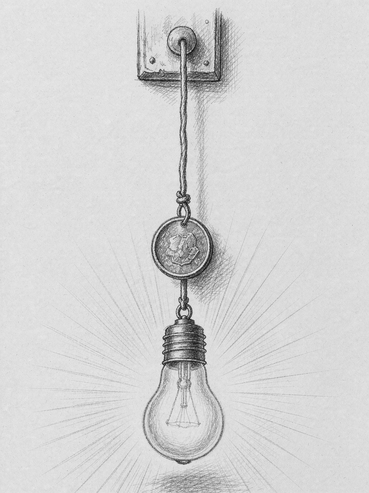
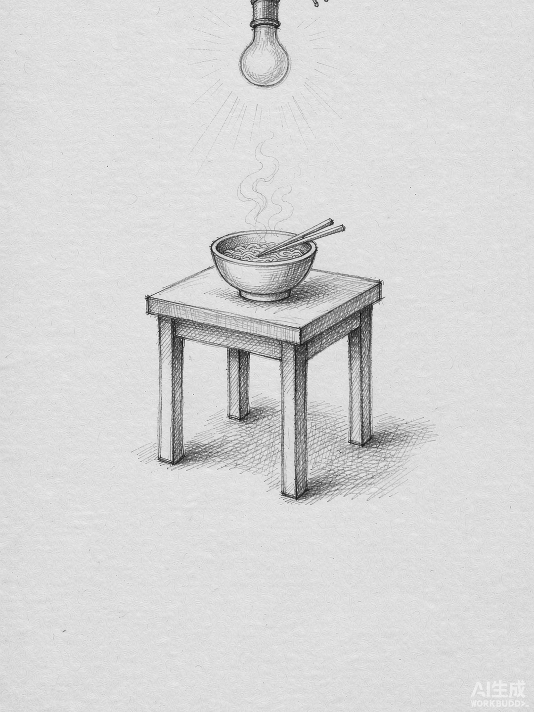
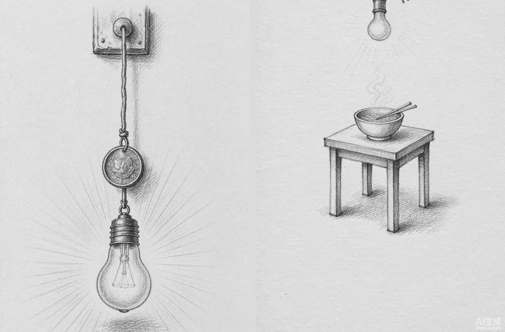

主图1 / 2 · 钩子

花同样的钱，
买到更聪明的智能 一枚硬币坠在灯绳上，灯刚亮
买到更聪明的智能 一枚硬币坠在灯绳上，灯刚亮
意象：拉线开关的绳尾坠着一枚硬币，下面的灯泡刚被拉亮，光用细排线放射出去。
对应全文最硬的那句论证——投入极小，换来的光很实在。
对应全文最硬的那句论证——投入极小，换来的光很实在。



| 统一项 | 同为排线明暗预设、同为 2B 石墨单色、同为左上单一光源、同为纸色底 —— 这四项一致才成套 |
|---|---|
| 裁切 | 生成尺寸 1024×1536（9:16）→ crop.py --ratio 0.75 裁成 3:4 → 输出 1080×1440 |
| 主图定位 | 逐行墨量测得干净带在 19%–41% 高度，标题放在 21% 处，不会压到灯绳与灯泡 |
| 次图定位 | 主体居中（33%–69%），上下皆空，标题放在上部 17% 处 |
| 一处意外 | 主图顶部只有 125px 空白——模型把灯绳从画面顶端垂了下来（物理上合理）。所以标题没放最顶上，而是按墨量下移到干净带 |